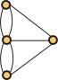

Graph Theory Lecture 3
Walks and Eulerian graphs
The Bridges of Konigsberg

Can you cross every bridge exactly once and return to where you started?
Example of a walk on a graph
$A, 6, D, 4, C, 5, F, 3, D, 8, E$
Definition of a walk
A walk from $v$ to $w$ on a graph $G$ is a sequence $$v=v_0, e_1, v_1, e_2, v_2,\dots, e_n, v_n=w$$ of edges and vertices so that $e_i$ is between $v_{i-1}$ and $v_i$
We say a walk is closed if $v=w$; that is, it starts and ends at the same place
Why such a mess?
If our graph is simple, we only need to record the vertices.
Horrible notation you don't need to remember
A walk that doesn't repeat any edges is a trail
-
A walk that doesn't repeat any vertices is a path
Actually, we allow paths to have the first and last vertex be the same, so that we can have closed paths
Konigsberg revisted

Definition of an Eulerian graph
A graph $\Gamma$ is Eulerian if it has a walk that uses every edge exactly once.
Is the Konigsberg graph Eulerian?
If $G$ is Eulerian, every vertex has even degree
- Stand at a vertex, and watch your friend follow the Eulerian cycle
- Every time they reach your vertex, they enter by one edge...
- ...and leave by another
- This puts all the edges you can see at your vertex into pairs
Actually, that's almost all you need.
(digression on connectedness, components, disjoint unions...)
If $G$ is connected and every vertex has even degree, then $G$ is Eulerian.
Skeleton proof
- Walk randomly until you get back where you started
- Remove that walk to get a smaller graph
- By induction all the pieces of that graph have Eulerian walks
- Glue the cycles together
A modest proposal
Find several formally written up proofs of this theorem, and compare them.
A Theorem worth repeating
A connected graph is Eulerian if and only if every vertex has even degree
- To show a graph isn't Eulerian, quote this, and point out a vertex of odd degree
- If it is Eulerian, use the algorithm to actually find a cycle.
A variation
A graph is semi-Eulerian if it has a not-necessarily closed path that uses every edge exactly once.
The obvious question
How can you tell whether or not a graph is semi-Eulerian?
Theorem
A connected graph is semi-Eulerian if and only if it has most two vertices with odd degree.
- Can prove by adapating proof of Euler's theorem
- To avoid repetition, can use a sneaky trick...
Lazy and devious
- Suppose $G$ has two vertices $v$ and $w$ with odd degree.
- Then add one edge to get $H=G\cup vw$ with all even degrees.
- By Euler's theorem, $H$ has an Eulerian cycle
- Delete the edge $vw$ from the Eulerian cycle of $H$ to get an Eulerian path on $G$